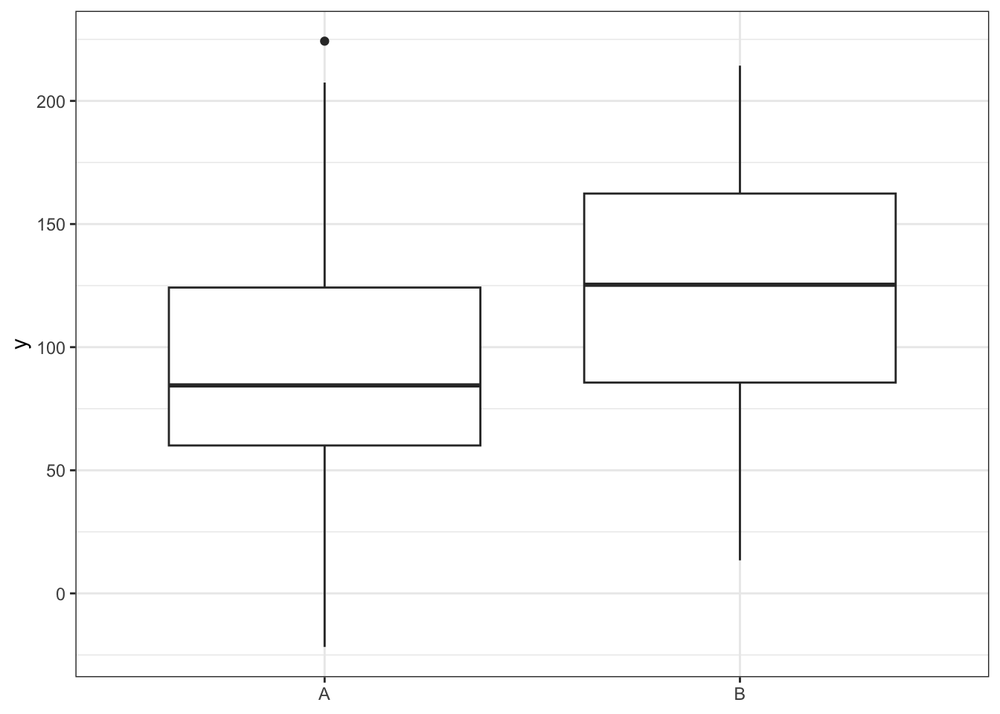
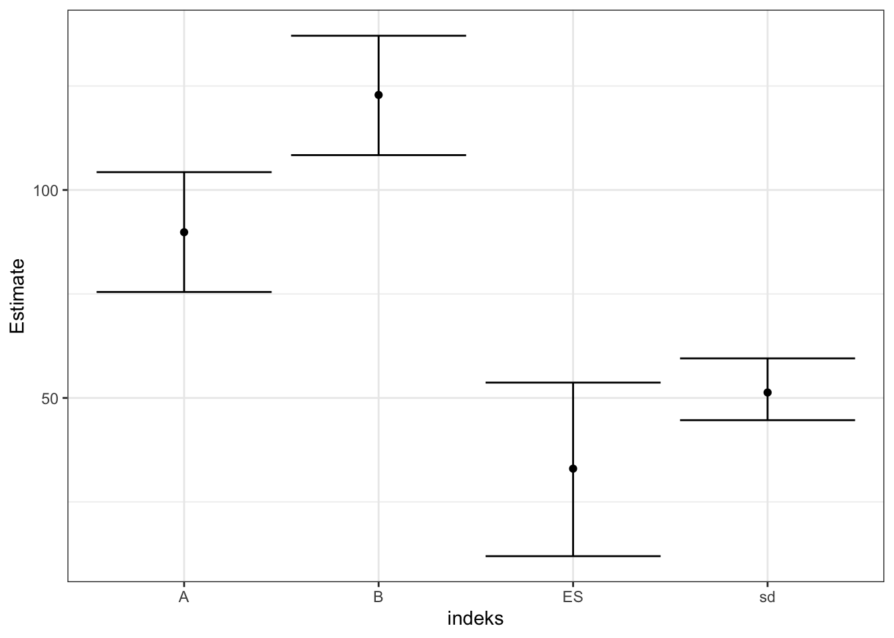
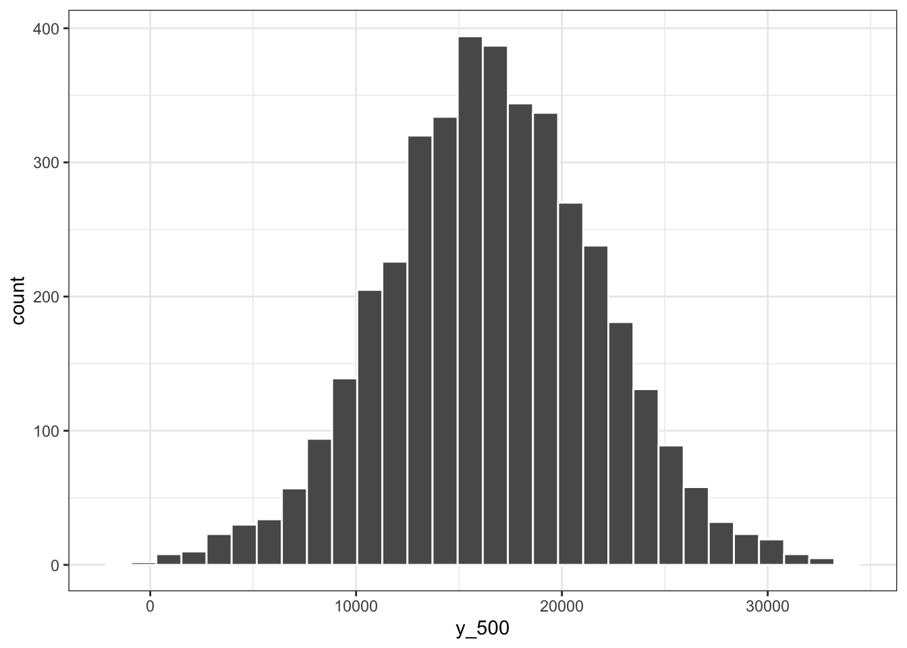
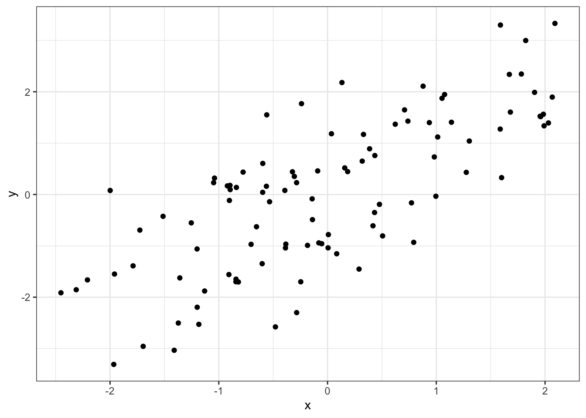
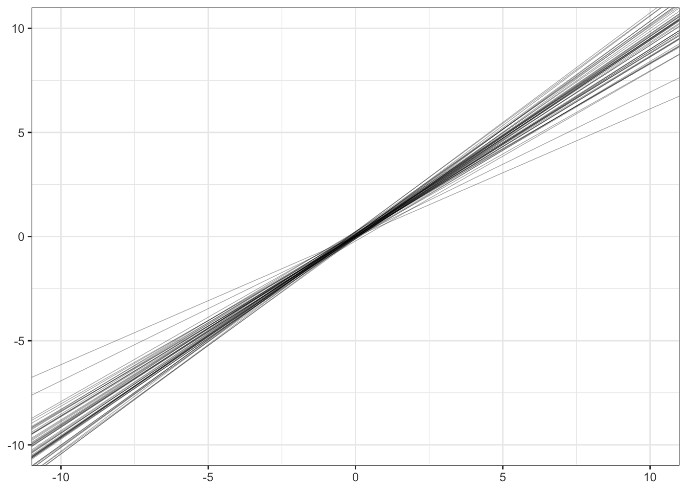
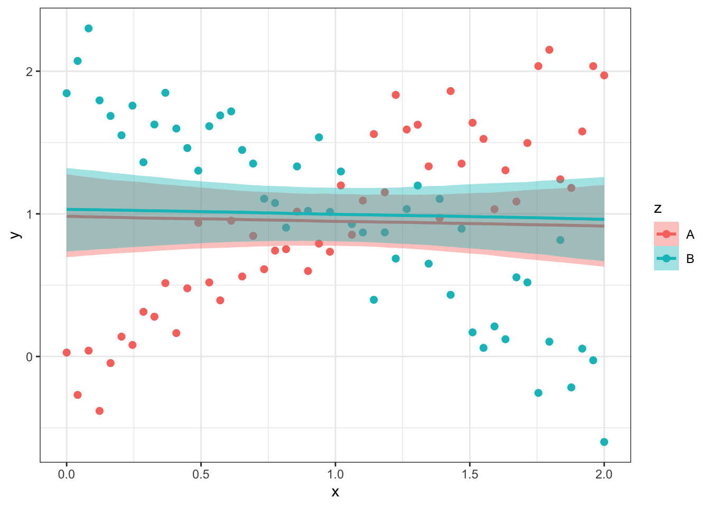
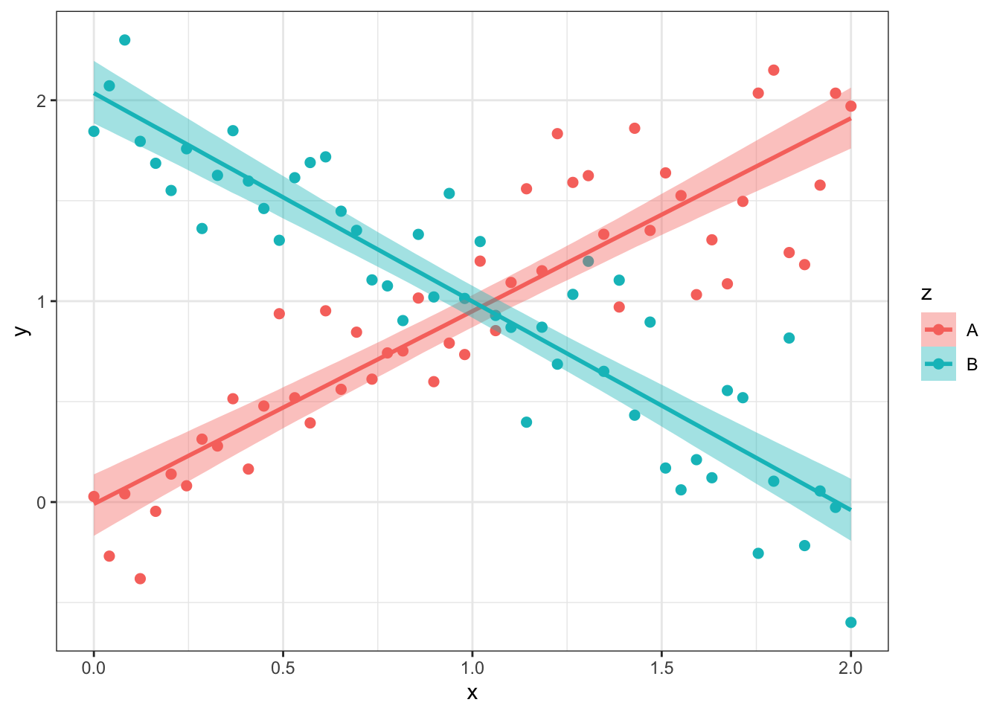
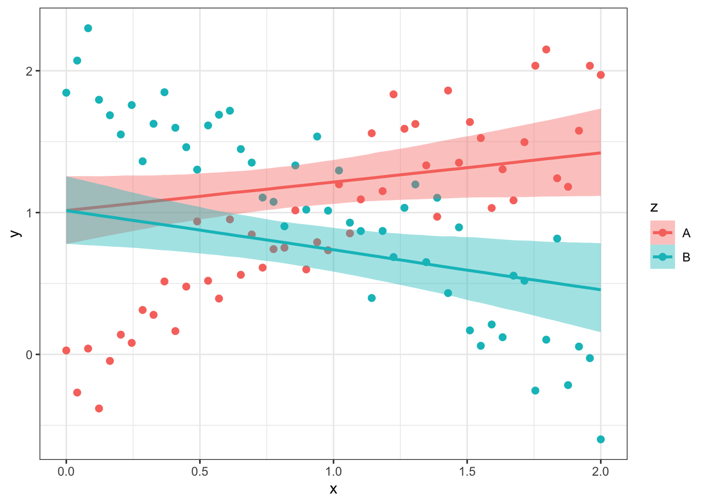
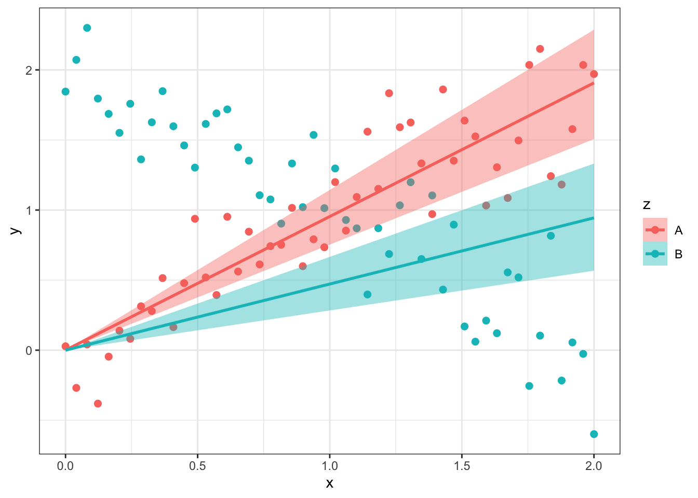

7 5 Basic linear regression
Lets start by thinking once more about modeling a normally distributed continuous variable, y, with the normal model:
\[ y \sim normal(\mu, \sigma)\]
We will get the mean y (\(mean = \mu\)) and data level sd (\(SD = \sigma\)) from this model. But what if we want to model the mean y and/or the sd stratified according to different levels of another variable, x?
Suppose that we have measured on each object of measurement its height and we also know its sex. We code the male sex with 0 and female sex with 1, so the sex is now technically a continuous variable, for modeling purposes. We want to model the mean height for sex = 0 and for sex = 1 subjects. The easiest way to do this would be to partition the data by sex and run 2 separate models. \[h_{sex = 0} \sim normal(\mu, \sigma)\]
\[h_{sex = 1} \sim normal(\mu, \sigma)\] We will get separate estimates from separate models, which know nothing of each other, and from these, we can get effect sizes with full posteriors.1
This is wasteful, however, because we could use the information on females heights on males heights, and vice versa. The model, by which we do this, is called linear regression. We regress y on x. The regression model differs from the simple \(y \sim normal()\) model in that as the simple model estimates the unconditional (a.k.a. marginal) probability of P(Y), the regression model estimates a conditional probability \(P(Y\vert x_i)\), where \(x_i\) stands for some fixed value(s) of one or more predictor variables. We estimate the mean value of Y given pre-specified exact values of X.
In principle, we should strive for big models that use all our data. However, for practical reasons, we can also divide the data and run separate models. Statistics is a practical thing. If a full model is too hard to specify, to understand, or to fit, use several smaller models instead!
A regression model can be built in different ways. For instance, we could say to the model that (i) different levels of sex (the X-predictor) can be associated with different mean heights (the predicted variable), but the individual heights at both levels of sex must have identical sd-s; or (ii) that mean heights of both sexes must be identical, but individual heights may have different sd-s; or (iii) that both mean heghts and sd-s of indovodual heights are allowed to vary by sex. The most common model, by far, would be (i), so lets start from that one.
What we model is the Y-variable (height).2
What we model Y on is the X-variable (sex).3
The Model consists of two parts, the deterministic part and the stochastic part: (i) the process model shows the precise deterministic relationship between a mean Y value and a precise X value (denoted \(x_i\)); (ii) the likelihood shows how we model stochastically the variation in the Y-variable (but not in the X-variable). Linear models can only have a normal or a students t likelihood. Other likelihoods, like binomial, Poisson, lognormal, etc., are allowed in GLMs (Generalized Linear Models), of which more in later chapters.4
The linear process model for the mean (remember, we want the mean to vary, but the sd to stay put in different levels of x) is then \(\mu = \alpha + \beta x\), where \(\alpha\) is the intercept and \(\beta\) is the slope. This is nothing more complicated than linear equation, which allows to place a straight line through 2D Cartesian space. It binds the x-variable (sex) into \(\mu\), but in doing so, we have redefined the parameter \(\mu\) through two new parameters: intercept (\(\alpha\)) and slope (\(\beta\)).5 So, instead of \(\mu\), we will be fitting these two.
\[y \sim normal(\mu, \sigma)\]
\[\mu = \alpha + \beta x\]
or, equivalently, \(y \sim normal(\alpha + \beta x, \sigma)\), or, equivalently \(y = \alpha + \beta x + normal(0, \sigma)\).
We now need three priors, one each for \(\alpha\), \(\beta\), and \(\sigma\).
\[\alpha \sim normal(.,.)\]
\[\beta \sim normal(.,.)\]
\[\sigma \sim student_t(.,.,. )\]
Next we do a simple simulation of two groups, each N = 100 and sd = 50, mu1 = 100 and mu2 = 110. The plotting of these data shows a moderate difference of the means, relative to sd.
We fit the model in brms:
Show code
simple_lin_m0 <- brm(y~x, data=df1,
file = "models/simple_lin_m0.rds") Estimate Est.Error Q2.5 Q97.5
b_Intercept 89.84760 7.200801 75.47945 104.28763
b_xB 33.00253 10.433655 11.96027 53.69062
sigma 51.31485 3.772500 44.65745 59.51646Intercept denotes \(\alpha\), which in our case is the mean for group 1 (where x = 0)
xB denotes \(\beta\), which is the effect size, a.k.a. difference between means of group 1 and group 2.
The mean of group 2 is then \(\alpha + \beta\) and the \(\beta\) coefficient is our estimate for the difference between the groups.6

So far we used a categorical x-variable or predictor, sex, which we recoded as a continuos variable from which we have 2 values (0 and 1). We did this solely in the interest of the mathematics of line fitting. Thanks to this trick we could ask about the height of someone whose sex = 500. There is no problem getting an estimate the from the fitted model. All we have to do is to substitute the fitted values into intercept and slope coefficients. We will use the full posterior samples, so we do the calculation 4000 times (this is how many posterior samples we have) with slightly different estimates for intercept and slopes. As our Bayesian model considers all of these pairs plausible, our best option is to calcuate them all and plot the full posterior as an histogram. This posterior gives us the full information on uncertainty around the prediction.
Show code
y_500 <- post$b_Intercept + post$b_xB * 500
So the posterior depicted in the histogram tells us that the predicted height for a subject, whose sex = 500, is about 200-fold larger than the height of males and females. This is fine matemathically, but in the world it makes no sense in more than one level.
However, if our predictor really has more meaningful levels than 0 and 1, then this is exactly how we fit and interpret the linear regression. The meaning of Intercept and slope remains the same:
The intercept is the estimated mean value (the expected value) of Y, if x = 0, or \(E(Y\vert X=0)\).
The slope gives the change in the expected value of Y, if we increase the X value by one unit.
As this is linear regression, it makes no difference, what the actual X value is, every one-unit change in X is accompanied with a slope-unit change in the predicted mean Y.
Now we simulate a regression for 2 continuous vars (N = 100, mean = 0, sd = 1):

We run the model and plot out 50 random fits, using 50 random draws from the posterior.
Show code
simple_lin_m1 <- brm(y~x, data = xy_data,
prior = prior(normal(0, 1), class=b),
file = "models/simple_lin_m1.rds")Show code
simple_lin_m1_post <- posterior_samples(simple_lin_m1) %>% sample_n(50)
ggplot(data =NULL) +
geom_abline(aes(intercept= simple_lin_m1_post$b_Intercept,
slope = simple_lin_m1_post$b_x),
size=0.3, alpha = 0.3)+
xlim(-10, 10) + ylim(-10, 10)+ theme_bw()
All regression lines go through both mean(y) and mean(x) – both are 0 in our sim. The data range is about 3-4 units: see how the fit gradually becomes uncertain beyond that. Whether or not it makes sense to predict mean y values beyond the x data range is a scientific question – the relations in nature are rarely linear beyond a short range, if that. We are not doing linear regression because we think that the world is linear, we do it because it is convenient and the models are easy to interpret from coefficients alone. The surprising thing is, though, that it often works. This is the metaphysical mystery behind linear regression: it tends to work.
7.1 Adding predictors
We add additional predictors when we believe (i) that all predictors (\(x_1, ..., x_i\)) influence the predicted variable (y), and (ii) that those influences are independent of each other. Independence leads to an additive process model.
\[y \sim normal(\mu, \sigma)\]
\[\mu = \alpha + \beta_1 x_1 + \beta_2 x_2 + ... + \beta_i x_i\] and priors for \(\alpha\), \(\beta_1\), \(\beta_2\), and \(\sigma\).
What happens if we expand our regression model by including more predictors?
Now the slope of \(x_1\) tells us, how much mean y changes, if we change \(x_1\) by 1 unit and \(x_2\) by 0 units (keep \(x_2\) constant). Equivalently the slope of \(x_2\) tells us, how much mean y changes, if we change \(x_2\) by 1 unit and keep \(x_1\) constant.
There is another way of interpreting multiple regression betas: \(\beta_1\) tells us, what extra information on predicting the y value we get from \(x_1\), if we already know how \(x_2\) influences y. And conversely, what extra value in predicting y do we get from \(x_2\), if we already know how \(x_1\) influences y. For instance, we can predict someones height from the length of his right foot, but if we already know the prediction from the left foot, the right foot gives us (almost) nothing. And since including it in the model leaves very little covariation with height that is not also covariation of the left foot with height (and vice versa), then most of the predictive information that is included in the \(R^2\), is not included in the respective betas (which consequently have extremely wide CI-s). This is collinearity.
some points:
there is no reason to think that if we compare models \(\mu = \alpha + \beta x_1\) and \(\mu = \alpha + \beta_1 x_1 + \beta_2 x_2\), then \(\beta\) and \(\beta_1\) would be similar, or even have the same sign. The first is the total effect of \(x_1\) on y, and the second is, in causal interpretation, the direct effect of \(x_1\) on y.
if you have several predictors in your regression, then for easier comparison of the betas, it makes sense to standardize them. Then the predictors that have betas farther from zero, have more effect on y.
If you have only continuous predictors, use this
x_st = (x - mean(x))/sd(x). Then all your predictors have mean = 0 and sd = 1. Then the intercept is the value of y, when all predictors are at their mean values (which is always 0), and each slope gives the change in mean y, if the relevant predictor changes by one standard deviation, and all other predictors remain unchanged.If you have both continuous and binary predictors, then you will get approximate comparability of betas with the following transformation:
x_st2 = (x - mean(x))/(2*sd(x)). Now the meaning of the slope changes - it is the change in mean y if x changes by 2 standard deviations (that is from the 2.5th quantile to the 97.5th quantile, which is a change that covers almost the range of x variation). As before, all other X-s are kept constant, and intercept is connected to mean values of all X-s.sometimes transforming a predictor helps to linearize the y vs x relationship.
The thing with adding predictors to linear regression process model, is that the additive model structure specifies parallel slopes. To see, what this means, lets simulate some data. We have a categorical variable z with 2 levels, “A” and “B”, denoting experimental conditions A and B. We have a x-variable (akin to a time variable), which covers the range 0 to 2 with 50 equally spaced points. And we have a continuous measurement variable y, which in experiment “A” goes up as x increases, and in experiment B goes down with equal rate.
# A tibble: 6 × 3
z x y
<chr> <dbl> <dbl>
1 A 0 -0.145
2 A 0.0408 0.159
3 A 0.0816 0.0636
4 A 0.122 0.226
5 A 0.163 -0.113
6 A 0.204 0.130 What happens if we model these data by regression equation \(y = \alpha + \beta_1 x + \beta_2 z\)?

This model completely fails to capture the simulated data! The slopes of the A and B experiments are restricted to be parallel (fixed) by the additive model structure. The regression lines cross the \(mean(y \vert x=A)\) and \(mean(y \vert x=B)\) points, which in this simulation is the same value (1). This model fit loses in its predixtion the X-shaped data – the model thinks that A and B conditions lead to pretty much identical outcomes!
We can save the day by introducing an interaction term, which is actually a multiplication term. Like this \(y = \alpha + \beta_1 x + \beta_2 z + \beta_3 x z\).

Now the model fit perfectly recaptures the simulated data. Its general intercept = 0, its deflection for z=B is 2, its slope for x is 1, and its deflection for x=B is -2. So the fitted model is \(y= 0 + 1x + 2z - 2xz\)
these are the fitted model coefficients.
Show code
posterior_summary(m_sim_interaction)[-6,] Estimate Est.Error Q2.5 Q97.5
b_Intercept -0.0110400 0.07945562 -0.1682108 0.1379032
b_x 0.9610941 0.06813031 0.8323058 1.0946147
b_zB 2.0473411 0.11085603 1.8273933 2.2652138
b_x:zB -1.9991338 0.09518095 -2.1831346 -1.8108486
sigma 0.2908296 0.02123843 0.2525395 0.3349225What happens if z is a continuous variable? The interaction model still works and gives a separate x slope for every z value, and conversely, it gives a seprate z slope for each x value.7 This means that the model expects that the relationship between x and y, e.g. how much a unit increase in x predicts the mean y value at this x value, to depend on the value of z. And vice versa, it symmetrically expects that the relationship between z and y, e.g. how much a unit increase in z predicts the mean y value at this z value, to depend on the value of x. The model neither knows nor cares, which variable, x or z, is of main interest to you, or which (if any) of them causally affects y. But it does know (assume) that the variablity of x is identical at all levels of z, and vice versa. Also, it provides no shrinkage.
What happens, when we omit the additive part of the model like this: \(y= \alpha + \beta xz\)?
Now the fitted intercept is at the mean values of \(x \vert z=A\) and \(x \vert z=B\), which in both cases is 1. The slopes are 0.2 and -0.3 for A and B, respectively.

And an even simpler model \(y = \beta xz\), where intercept = 0. Here the slopes are 1 and 0.5, for A and B, respectively.

posterior_mu_model1 - posterior_mu_model2 gives the posterior for the effect size, i.e. by how much on average are males taller than females.↩︎
Also known as dependent variable, predicted variable.↩︎
Also known as independent variable, predictor.↩︎
A linear model is also linear in the process model, defined as any equation that can be reformulated as an addition (for example, if X = 2 and Z = 3, then 2 x 3 = 6 can be reformulated as 2 + 2 + 2 = 6, so \(y = xz\) would be a linear process model, as would be \(y = x + x^2 + x^3\)).↩︎
It is also common to denote intercept as \(\beta_0\) and slope as \(\beta_1\).↩︎
You can do this by simply adding the posterior samples of the two coefficients.↩︎
It must be noted, though, that continuous interaction models require more data to accurately estimate the interaction term (the difference between slopes) than simple additive models.↩︎